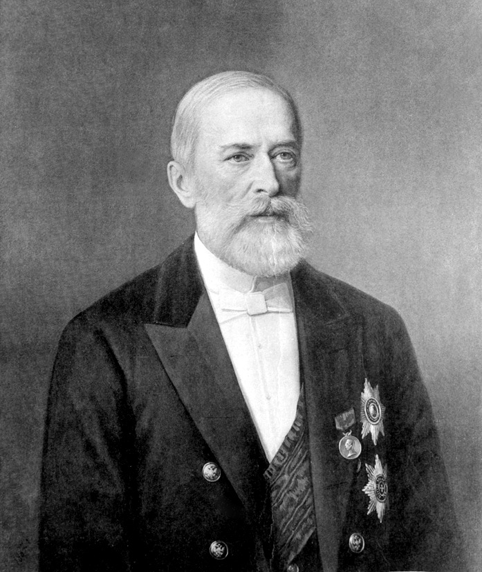
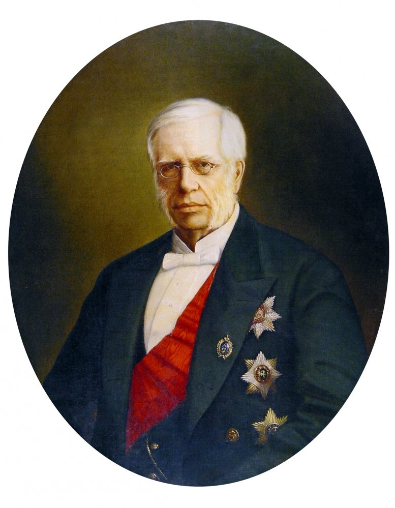
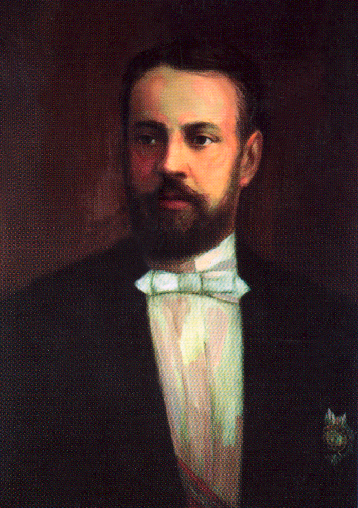

Н.В. Бунге - учёный-экономист, занявший пост министра финансов в 1881 г.
Он был сторонником ускорения экономического роста, выступал против прямого финансирования промышленности государством. На первое место он ставил задачу реформирования налоговой системы. Министр выступил за уменьшение налогового обложения крестьян, провёл снижение выкупных платежей и начал постепенную отмену подушной подати. Бунге повысил налоги на землю, городские строения, золотодобывающую промышленность. Выросли акцизы на сахар и табак. Были повышены таможенные пошлины на товар, ввозимые из-за границы.
И.А. Вышнеградский - профессор практической механики, крупный финансист и изобретатель. Пост министра занял 1 января 1887 г.
С целью нормализации денежного обращения Министерство финансов накапливало большие суммы, а затем принимало активное участие в сделках на зарубежных биржах, что в результате привело к повышению покупательной способности рубля.
Вывоз российских товаров за границу превышал ввоз в страну в страну зарубежных изделий.
Вышнеградский более энергично, чем Бунге, выступал за непосредственное участие государства в хозяйственной деятельности. Была ликвидирована разница между доходами и расходами государства, но также добиться превышения доходов над расходами.
1890-е годы стали периодом небывалого роста русской промышленности.
С.Ю. Витте - министр финансов в 1892-1903 гг. Продолжил курс в основных чертах.
Но в отличии от своих предшественников, Витте считал важным сохранять самодержавие.
В 1891 г. началось строительство Транссибирской магистрали, которая связала европейскую часть России с Сибирью и Дальним Востоком.
Страна пережила в 1893 г. мощный подъём железнодорожного строительства снова.